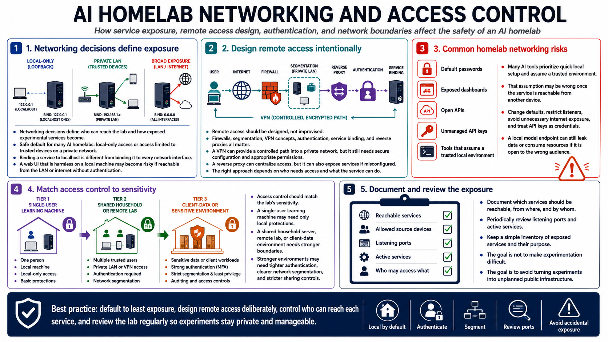

Networking and Access Control
Connecting to LMS... Progress: in progress

Narration
Networking decisions define who can reach the lab and how exposed experimental services become. The safest default for many AI homelabs is local-only access or access limited to trusted devices on a private network. Binding a service to localhost is different from binding it to every network interface. A web UI that is harmless on a local machine may become risky if it is reachable from the LAN or the internet without authentication.
Remote access should be designed, not improvised. Firewalls, segmentation, VPN concepts, authentication, service binding, and reverse proxies all matter. A VPN can provide a controlled path into a private network, but it still needs secure configuration and appropriate permissions. A reverse proxy can centralize access, but it can also expose services if misconfigured. The right approach depends on who needs access and what the service can do.
Default passwords, exposed dashboards, open APIs, and unmanaged API keys are common homelab risks. Many AI tools prioritize quick local setup and assume a trusted environment. That assumption may be wrong once the service is reachable from another device. Change defaults, restrict listeners, avoid unnecessary internet exposure, and treat API keys as credentials. A local model endpoint can still leak data or consume resources if it is open to the wrong audience.
Access control should match the lab's sensitivity. A single-user learning machine may need only local protections. A shared household server, remote lab, or client-data environment needs stronger boundaries. Document which services should be reachable, from where, and by whom. Periodically review listening ports and active services. The goal is not to make experimentation difficult. The goal is to avoid turning experiments into unplanned public infrastructure.